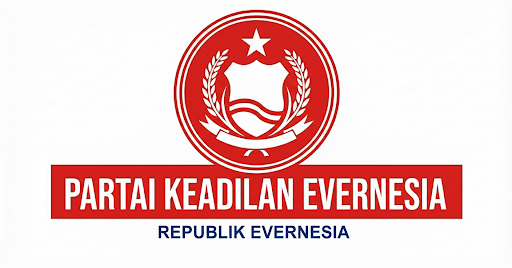

Partai Keadilan Evernesia
Partai Keadilan Evernesia

| Abbreviation | PKE |
| Type | Political party |
| Ideology | Reformist republicanism |
| Political Position | Reformist / Moderate |
| Founded | Sector XE |
| Leader | Adrian Wilbert |
| Operating Area | Republic of Evernesia (10E) |
| Status | Active |
| Government Model | Republic |
1. Overview
The Partai Keadilan Evernesia (PKE) is a student-led political party formed within the Republic of Evernesia. The party emerged from concerns regarding governance clarity, accountability, and protection of student rights under the existing sector administration system.
PKE positions itself as a reformist rather than revolutionary movement. Its objective is to address institutional loopholes through structured reform, deliberation, and consensus, while maintaining class stability.
Historically, PKE’s approach resembles moderate reform movements such as constitutional reform blocs in Meiji-era Japan or Indonesia’s post-1998 reform period, where legitimacy and gradual institutional change were prioritized over abrupt power shifts.
2. Political Position
Partai Keadilan Evernesia (PKE) is generally described as a centrist to centre-right political party within Evernesia’s political spectrum. The party emphasizes institutional stability, rule-of-law governance, and administrative efficiency. Its platform prioritizes strong legal frameworks and structured state authority rather than populist political mobilization. PKE’s political identity is closely tied to technocratic governance. Party leaders frequently frame political legitimacy as emerging from effective institutions and consistent legal enforcement rather than ideological campaigns. As a result, the party often attracts support from civil administrators, policy specialists, and voters who prioritize stability and regulatory clarity. Although primarily institutional in focus, PKE does participate actively in electoral politics and parliamentary coalitions. Its policy approach generally favors gradual reform through legislation rather than rapid systemic transformation.
The party supports the establishment of a Republic model for Evernesia, emphasizing checks and balances, transparency, and civic safeguards.
3. Core Principles
PKE’s platform focuses on identifying foundational governance gaps rather than prescribing rigid or overly detailed solutions. The party’s core principles include:
- Anti-Pembungkaman (Anti-Silencing): Protection of freedom of opinion, except in cases where content is proven to involve SARA or explicit material.
- Anti-Abuse of Power: Prohibition of misuse of authority by any class official.
- Financial Transparency: Clear and regular disclosure of class financial management.
- Limits of Authority: Defined boundaries for each class office to prevent overreach.
- Evaluation of Officials: Periodic performance assessment of class officials.
- Protection of Citizens: Safeguards for people of Evernesia against arbitrary punishment or unfair treatment.
- Seat Movement Regulation: Permission-based seat changes with approval from the current teaching staff.
- Supervisory Piket Duty: Responsibility of top-ranked piket members to supervise post-class cleaning.
These principles are intentionally framed as a constitutional framework, not a finalized constitution, leaving room for deliberation and preventing premature consolidation of power.
4. Organizational Stance
- Non-confrontational: Emphasizes dialogue and formal discussion over conflict.
- Legitimacy-first: Seeks reform through recognized procedures and collective agreement.
- Policy-before-power: Prioritizes identifying systemic issues before proposing enforcement mechanisms.
5. Relationship to Governance
PKE has historically maintained a cooperative relationship with state institutions and administrative bodies. Rather than positioning itself primarily as an opposition movement, the party frequently frames its role as contributing to governance stability and institutional development. In parliamentary contexts, PKE members have often participated in legislative committees related to legal reform, administrative policy, and regulatory oversight. This institutional involvement has allowed the party to influence policy outcomes even when not holding executive authority. Supporters of the party argue that this governance-focused approach strengthens the state’s long-term administrative capacity. Critics, however, sometimes claim that the party’s close engagement with bureaucratic institutions creates excessive alignment with administrative elites.
6. View on Party System
PKE supports a structured multi-party system in which political organizations compete through policy debate and legislative participation while maintaining institutional respect for governance frameworks. Party leadership has frequently expressed concern about political fragmentation, arguing that excessive party proliferation can weaken legislative effectiveness and undermine stable governance. As a result, PKE typically favors coalition arrangements that prioritize policy continuity over short-term political rivalry. The emergence of new political organizations, including breakaway movements formed by former members, has occasionally tested the party’s position within Evernesia’s evolving party system.
7. Leadership
The party is led by its founder Adrian Wilbert, who established the organization during the formation of the Republic of Evernesia. Wilbert advocates gradual institutional reform and the development of a stable republican governance framework within Sector XE.
Under Wilbert's leadership, PKE has focused on policy discussion, transparency initiatives, and the development of a constitutional framework for student governance. He is regarded as the central architect of the party’s reformist approach and organizational philosophy.
| Leader | Position | Term |
|---|---|---|
| Adrian Wilbert | Founder & Party Leader | Founding – Present |
8. Notable Members
Several individuals have been associated with PKE throughout its development, contributing to both policy discussion and public discourse within Evernesia.
- Adrian Wilbert – Founder and current leader of the party. Wilbert designed the party’s reform framework and continues to guide its policy direction.
- Justan Beaumont – A PKE member who became publicly known during the Rostein Files investigation after being referenced in documents linked to a government information leak. The case led to his arrest and temporary suspension from party activities while investigations proceeded.
- Al’korvus Setiabudi – A geologist and former PKE member known for developing the Out of Kalidoni Theory and the Theory of Local Evolution, which attempt to explain geological and biological development within the region. Setiabudi later left PKE and founded the Partai Penjomokan Evernesia (PPE), a party advocating civil identity protections and expanded LGBT rights under the political concept known as Poligiri.
9. Electoral Results
Elections within the Republic of Evernesia are conducted on a small representative basis due to the limited size of the electorate. Political competition therefore emphasizes direct debate and policy discussion rather than mass campaigning.
| Election Year | Votes | Vote Share | Seats Won | Result |
|---|---|---|---|---|
| 2025 | 9 | 26% | 2 / 7 | Opposition |
| 2026 | 11 | 32% | 3 / 7 | Coalition Partner |
PKE's electoral base typically consists of voters who prioritize institutional stability, administrative transparency, and rule-of-law governance.
10. Criticism and Response
Critics have described PKE as overly cautious or insufficiently ideological. In response, the party argues that durable reform requires legitimacy, operational feasibility, and collective support, rather than rapid but unstable change.
11. Current Status
PKE has met the membership threshold to operate as a formal political party within Sector XE. The party continues to prepare reform agendas and discussion documents for future class deliberations, maintaining its role as a stabilizing reformist force within the Republic of Evernesia.
Partai Keadilan Evernesia remains an active participant in Evernesia’s political system. The party continues to be led by its founder Adrian Wilbert, who oversees the party’s strategic direction and parliamentary engagement.PKE maintains representation within the national legislature and continues to advocate legal and administrative reforms as central components of its platform. The party’s political influence is generally associated with policy development and institutional governance rather than large-scale electoral mobilization. Former members of the party have also contributed to the broader political landscape. Notably, Al’korvus Setiabudi, a geologist known for proposing the Out of Kalidoni theory and the Theory of Local Evolution, departed from PKE and later founded the Partai Penjomokan Evernesia (PPE). The new party promotes social policies associated with Poligiri, including expanded protections for LGBT rights. Despite internal controversies and the emergence of new political groups, PKE continues to maintain a stable role within Evernesia’s evolving party system.